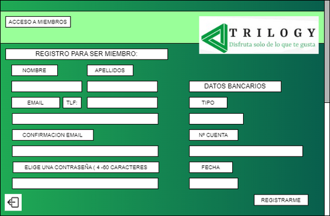

Este es el diseño de la primera página que se va a iniciar en el programa que te permitirá registrate y iniciar sesión.
DISEÑO ANTIGUO
DISEÑO ACTUAL
Hemos decidido cambiar el diseño para que sea mas intuitivo y fácil de utilizar teniendo solo dos opciones más la de cerrar la aplicación.
Bocetos ventana de registro
Este es el diseño de la página de registro que contiene un formulario para poder hacer el registro en la aplicación.
DISEÑO ANTIGUO

DISEÑO ACTUAL
Hemos decidido cambiar el formulario añadiendo más campos a rellenar por tema de seguridad y base de datos y en algunos campos hemos decidido que sea un desplegable con las posibles opciones por tema de comprobaciones que los datos son correctos. Por ultimo hemos puesto la posibilidad de ir a iniciar sesión si te has equivocado de botón y ya tienes una cuenta.
Bocetos ventana de inicio de sesión
Este es el diseño de la página de inicio de sesión que te permite acceder a nuestra aplicación una vez registrado.
DISEÑO ANTIGUO
DISEÑO ACTUAL
Hemos decidido cambiar y añadir la opción de registrarte por si te has equivocado y un engranaje para abrir la pagina de los administradores.
Bocetos ventana de selección de membresía
Este es el diseño de la página de selección de membresía donde seleccionas que membresía quieres.
DISEÑO ANTIGUO
DISEÑO ACTUAL
Hemos decido cambiar la estética para que fuera más vistosa y agradable a la vista.
Bocetos ventanas del administrador
Este es el diseño de la página del administrador donde podrá hacer unas pequeñas gestiones de los usuarios y las ganancias.
DISEÑO ANTIGUO
DISEÑO ACTUAL
Hemos decidido este cambio radical por apariencia y por comodidad porque como lo teníamos antiguamente si querías el usuario 945456 no sabias quien es y era muy incomodo, pero ahora con el correo y una comprobación que exista ya serviría y el correo.
Bocetos ventanas de Cristal_Basic
Este es el diseño de la página de cristal_basic donde podrás escuchar música y albumes.
DISEÑO ANTIGUO
DISEÑO ACTUAL
Hemos decidido este cambio estético en la pantalla principal de cristal_basic para que sea más atractivo al usuario, el la pantalla de álbum hemos decidido también el cambio estético por ser más atractivo al usuario y hemos decidido por tema de compatibilidad, comodidad y personalizado que la música se abra con la aplicación que tu elijas.
Bocetos ventanas de Rubi_Standar
Este es el diseño de la página de Rubi_Standar donde podrás ver películas.
DISEÑO ANTIGUO
DISEÑO ACTUAL
Hemos decidido este cambio estético en la pantalla principal de rubi_standar para que sea más atractivo al usuario e intuitivo, cuando seleccionas una película hemos decidido hacer el contraste entre gris y blanco para mayor legibilidad y hemos actualizado para que muestre mucho más información al usuario sobre la película seleccionadas, hemos decidido por tema de compatibilidad, comodidad y personalizado que las películas se abra con la aplicación que tu elijas.
Bocetos ventanas de Zafiro_Standar
Este es el diseño de la página de Zafiro_Standar donde podrás ver series.
DISEÑO ANTIGUO
DISEÑO ACTUAL
Hemos decidido este cambio estético en la pantalla principal de zafiro_standar para que sea más atractivo al usuario e intuitivo, cuando seleccionas una serie te va a mostrar las temporadas que tiene y los capítulos de la primera temporada de la serie y en todo momento te mostrar información de la serie, hemos decidido por tema de compatibilidad, comodidad y personalizado que las series se abra con la aplicación que tu elijas.
Bocetos ventanas de Diamante_Premium
Este es el diseño de la página de Diamante_Premium donde podrás ver películas, series y música con un click.
DISEÑO ANTIGUO
DISEÑO ACTUAL
Hemos decidido este cambio estético en la pantalla principal diamante_premium para que sea más atractivo al usuario e intuitivo, cuando seleccionas un contenido audiovisual hemos decidido hacer el contraste entre gris y blanco para mayor legibilidad y hemos actualizado para que muestre mucho más información al usuario sobre el contenido audiovisual seleccionado, hemos decidido por tema de compatibilidad, comodidad y personalizado que el contenido audiovisual se abra con la aplicación que tu elijas.
Bocetos ventanas de las páginas de publicidad
Este es el diseño de la página de publicidad que la hemos añadido para una mejor experiencia en el aplicación.
DISEÑO ACTUAL
Hemos creado esta pantalla que es común en todas con la funcionalidad de incitar a ver contenido y como pasarela para el usuario para la página de administración del usuario donde puede cambiar muy pocas cosas.
Bocetos ventanas de cambiar membresía para los usuarios
Este es el diseño de la página de cambiar de membresía o darse de baja de nuestra aplicación para los usuarios.
DISEÑO ANTIGUO
DISEÑO ACTUAL
Hemos decidido este cambio para una mayor facilidad al usuario y que fuera más intuitivo realizar el cambio de membresía y mostrar más datos.
Bocetos ventanas de busqueda
Este es el diseño de la página de busqueda de contenido audiovisual.
DISEÑO ACTUAL
Hemos decidido añadir esta ventana para que el usuario pueda buscar el contenido audiovisual que quiera de forma más rápida.